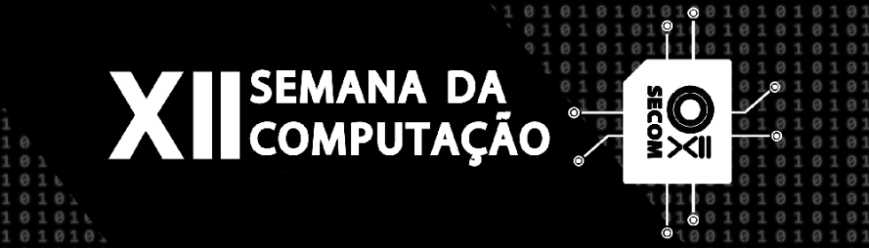
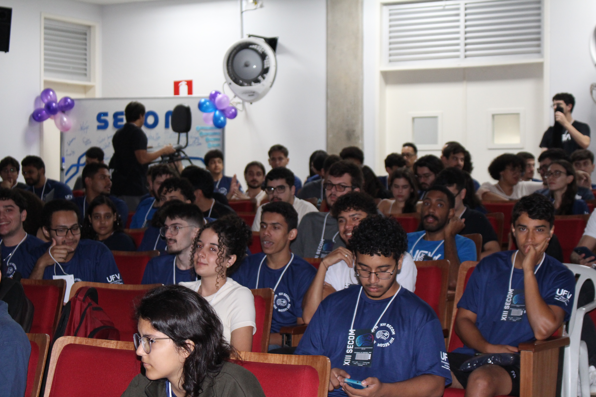
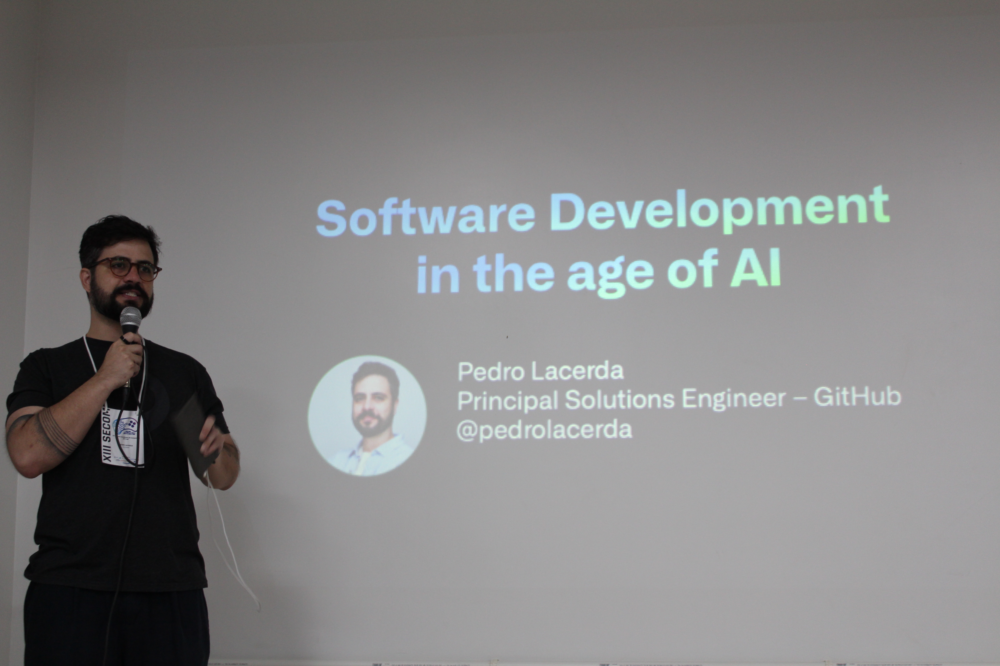
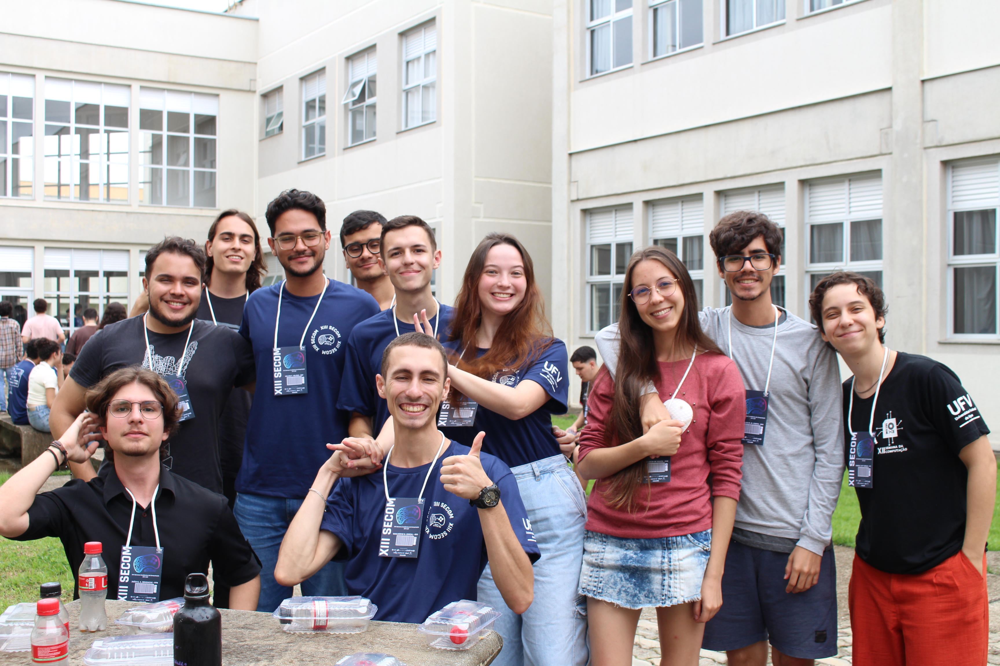
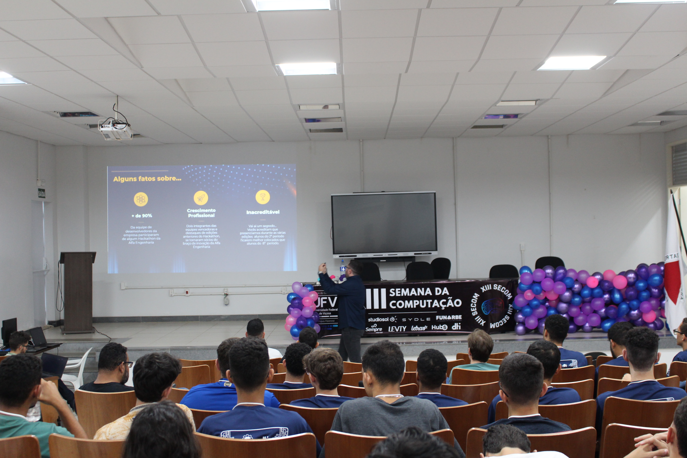
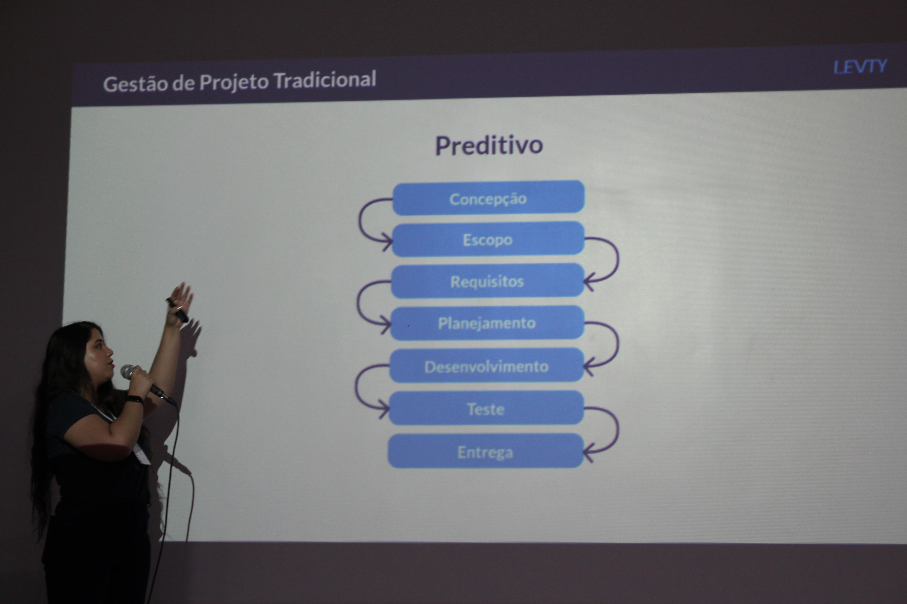

Semana da Computação(SECOM)

A Semana da Computação (SECOM) é um evento tradicional do Curso de Ciência da Computação da Universidade Federal de Viçosa – Campus Florestal (UFV Florestal), voltado para o aprendizado, integração e atualização tecnológica de seus participantes.
História e Organização
- Realizada anualmente, geralmente no segundo semestre letivo.
- Organizada pelo Centro Acadêmico de Ciência da Computação (CACC), em parceria com professores do curso, coordenação e apoio institucional da UFV Florestal.
- Contempla a participação de empresas de tecnologia, startups, ex-alunos e profissionais do mercado de TI.
Objetivos
- Complementar a formação acadêmica dos estudantes, trazendo temas que vão além do currículo obrigatório.
- Promover a integração entre alunos, professores e profissionais.
- Divulgar novas tecnologias, ferramentas e metodologias utilizadas no mercado.
- Estimular o desenvolvimento de projetos, inovação, empreendedorismo e pesquisa na área de computação.
Atividades Desenvolvidas
Durante a SECOM, são oferecidas diversas atividades, incluindo:Minicursos e oficinas
- Linguagens de programação (Python, Java, C, C++)
- Desenvolvimento Web e Mobile
- Redes de computadores e segurança
- Banco de dados e SQL
- Git e GitHub
Palestras
- Temas sobre carreira em TI, mercado de trabalho, inovação, inteligência artificial, ciência de dados, segurança cibernética.
- Experiência de ex-alunos no mercado de trabalho e em empresas de destaque
Maratona de Programação
- Competição interna entre equipes de estudantes, simulando provas de algoritmos e lógica semelhantes às Olimpíadas de Programação e à Maratona Brasileira de Programação.
Apresentação de projetos
- Trabalhos de disciplinas, pesquisa ou extensão desenvolvidos pelos estudantes do curso.
Talks com empresas
- Recrutamento, apresentação de programas de estágio e trainee.
- Discussões sobre demandas reais do mercado e tecnologias utilizadas.
Participação
Público-alvo: estudantes de Ciência da Computação, Sistemas de Informação, Engenharia, professores, profissionais de TI e comunidade acadêmica em geral. Reúne dezenas a centenas de participantes, sendo o principal evento anual do curso de Ciência da Computação da UFV Florestal.Impactos
Amplia o conhecimento técnico e prático dos estudantes. Fortalece o networking e a integração com profissionais do mercado. Motiva os alunos a participarem de competições de programação e iniciarem projetos próprios. Divulga o curso e a UFV Florestal na área de TI regionalmente. Prepara os participantes para o mercado de trabalho, aproximando teoria e prática em um ambiente dinâmico e motivador.Galeria




